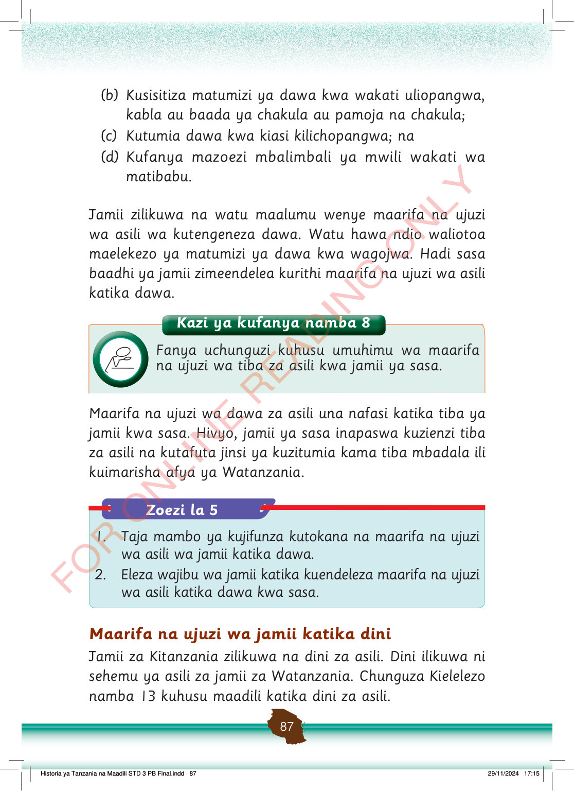

(b) Kusisitiza matumizi ya dawa kwa wakati uliopangwa, kabla au baada ya chakula au pamoja na chakula;
(c) Kutumia dawa kwa kiasi kilichopangwa; na
(d) Kufanya mazoezi mbalimbali ya mwili wakati wa matibabu.
Jamii zilikuwa na watu maalumu wenye maarifa na ujuzi wa asili wa kutengeneza dawa.
Watu hawa ndio waliotoa maelekezo ya matumizi ya dawa kwa wagojwa.
Hadi sasa baadhi ya jamii zimeendelea kurithi maarifa na ujuzi wa asili katika dawa.
Maarifa na ujuzi wa dawa za asili una nafasi katika tiba ya jamii kwa sasa.
Hivyo, jamii ya sasa inapaswa kuzienzi tiba za asili na kutafuta jinsi ya kuzitumia kama tiba mbadala ili kuimarisha afya ya Watanzania.
Maarifa na ujuzi wa jamii katika dini
Jamii za Kitanzania zilikuwa na dini za asili.
Dini ilikuwa ni sehemu ya asili za jamii za Watanzania.
Chunguza Kielelezo namba 13 kuhusu maadili katika dini za asili.
Kazi ya kufanya namba 8
Kazi ya kufanya namba 8: Fanya uchunguzi kuhusu umuhimu wa maarifa na ujuzi wa tiba za asili katika jamii ya sasa.
Fanya uchunguzi kuhusu umuhimu wa maarifa na ujuzi wa tiba za asili kwa jamii ya sasa.
Zoezi la 5
1. Taja mambo ya kujifunza kutokana na maarifa na ujuzi wa asili wa jamii katika dawa.
2. Eleza wajibu wa jamii katika kuendeleza maarifa na ujuzi wa asili katika dawa kwa sasa.